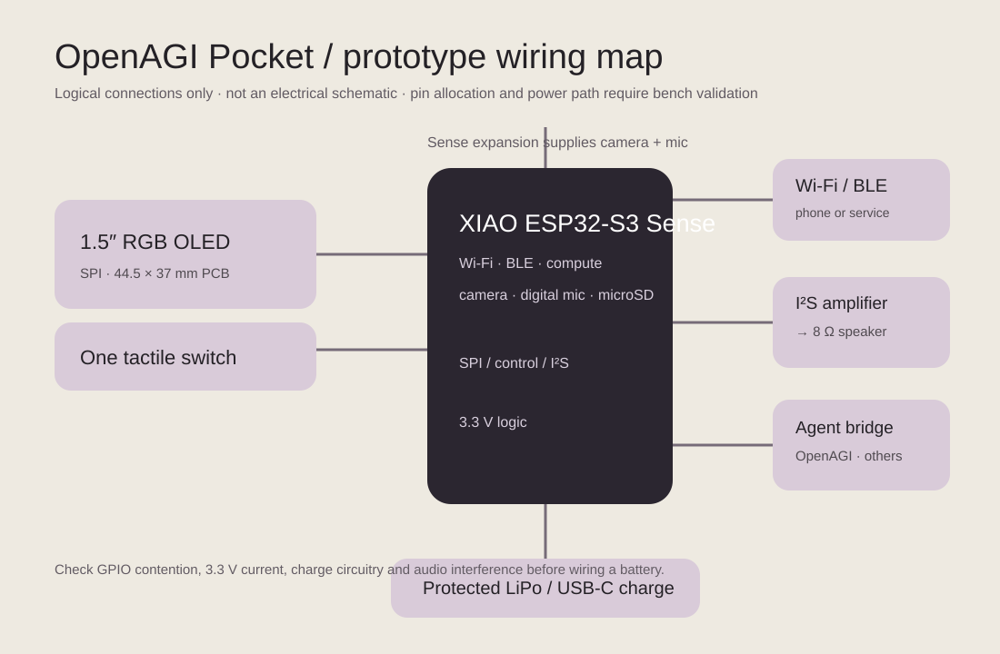

PROTOTYPE PLAN / REVISION 03
Make the
real thing.
DESIGN STUDY · FIT AND WIRING NOT VERIFIEDThe 72 × 72 × 28 mm body is a packaging target for off-the-shelf modules, not a dimensioned printable enclosure. The 58 × 55 mm concept was too optimistic once the camera, speaker, battery, OLED breakout and serviceable wiring were included. Print an envelope to judge the hand feel, then revise it around measured parts.
Start with these parts
| FUNCTION | PROTOTYPE CANDIDATE | ENVELOPE / INTERFACE | PLANNING COST |
|---|---|---|---|
| Processor, radio, camera, mic, storage | Seeed XIAO ESP32-S3 Sense | 21 × 17.5 mm-class main board plus Sense expansion, camera and microSD. Verify stacked height and pin access with purchased unit. | $20–$30 |
| OLED display | Waveshare 1.5″ RGB OLED | 44.5 × 37 mm breakout; 26.86 × 26.86 mm active area; SPI. The dark concept window is larger than the lit panel. | $16–$24 |
| Audio output | MAX98357A I²S amplifier breakout + 8 Ω micro speaker | Separate amplifier and speaker cavity; exact speaker part and acoustic grille remain to be selected. | $9–$18 |
| Battery and charging | Protected 3.7 V LiPo, connector and verified charge path | Cell dimensions, protection, thermal spacing and actual charging circuitry to be selected after bench test. | $9–$20 |
| Control + interconnect | One low-profile tactile switch, fine-gauge wire, connectors, strain relief | Tap/hold behavior in firmware; exact switch throw and cable routing require a hand-fit print. | $10–$25 |
| Shell and assembly | MJF/SLS or finished resin/FDM print, inserts, screws, diffuser | The selected visual mockup is not a CAD enclosure; final walls, bosses and tolerances are not engineered. | $25–$70 |
Dollar ranges are planning allowances, not checked supplier quotes. Shipping, tax, spares, tools and failed prints can increase one-off cost.
What is wired to what?
Download the system wiring map. The XIAO Sense is the proposed center: camera and mic arrive with its expansion stack; the OLED needs SPI; the amplifier needs I²S and drives the speaker; the switch uses a digital input; a protected battery and USB-C charge path feed the system. A genuine electrical schematic with pins, power distribution and protection cannot be released as verified until the exact boards are on the bench and simultaneous operation is tested.


Before connecting a battery, verify the board's charging implementation, polarity, peak Wi-Fi and audio current, and whether the camera/mic expansion leaves sufficient usable GPIO for the display and amplifier. Avoid an assumed pin map copied from a different XIAO variant.
The prototype sequence
- On USB power, bring up camera capture, microphone sampling, OLED updates and Wi-Fi independently on the XIAO Sense.
- Add the amplifier, speaker and switch. Check GPIO contention and audio noise while camera and Wi-Fi are active.
- Select a protected battery and document charging, peak draw, sleep draw, recording draw and temperature. Battery life is unknown until these are measured.
- Measure the assembled stack with a caliper, including camera focus clearance, display connector, antenna keep-out, wire bend radius and speaker air volume.
- Print a 72 × 72 × 28 mm envelope first. Revise CAD after the physical layout; only then make a fully featured enclosure.
Get the source
Selected visual mockup · Warm-shell reference · Wiring map · OpenAGI software


Price, later
The first prototype totals roughly $110–$190 in components, print and supplies; that is not a production BOM. A custom PCB could remove breakout boards, connectors and some assembly steps, but adds engineering, test fixtures, tooling and certification. A tentative $70–$110 assembled-hardware range at modest volume is too uncertain to confirm a $159 retail price. It excludes software operations, shipping, returns and margin for distributors.
OpenAGI’s software repository currently uses a noncommercial source-available license. The separate Pocket hardware repository and license have not been published. OpenAGI is the intended primary agent host; Hermes and other hosts would require a documented bridge.